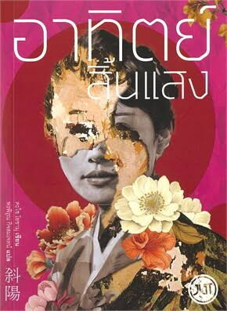

อาทิตย์สิ้นแสง
"แม้ในวันที่ไร้แสงสว่าง ชีวิตที่เหลืออยู่ จึงมีไว้เพื่อดิ้นรน"
ผลงานชิ้นเอกอีกเล่มของ ดาไซ โอซามุ ที่ฉายภาพการล่มสลายของยุคสมัยได้อย่างงดงามและรวดร้าวที่สุด เล่มนี้เปรียบเสมือนหมุดหมายสำคัญที่ทำให้เกิดคำว่า ชะโยโชกุ หรือ "ชนชั้นอาทิตย์สิ้นแสง" ซึ่งใช้เรียกกลุ่มชนชั้นสูงที่สูญเสียทุกอย่างหลังสงครามโลกครั้งที่ 2
เนื้อเรื่องย่อ
เรื่องราวเล่าผ่านบันทึกของ คาซุโกะ หญิงสาวผู้เกิดในตระกูลขุนนางชนชั้นสูงของญี่ปุ่น หลังสงครามโลกครั้งที่ 2 สิ้นสุดลง ระบบขุนนางถูกยกเลิก ครอบครัวของเธอต้องสูญเสียยศถาบรรดาศักดิ์ ทรัพย์สิน และความเกรียงไกรไปในพริบตา จนต้องย้ายออกจากบ้านหรูในโตเกียวไปอาศัยอยู่ในบ้านหลังเล็กๆ นอกเมือง ท่ามกลางความตกอับ คาซุโกะต้องคอยดูแล ท่านแม่ ผู้เป็นสัญลักษณ์คนสุดท้ายของความสง่างามและความบริสุทธิ์แบบโลกใบเก่าที่กำลังร่วงโรย ขณะเดียวกัน นาโอจิ น้องชายของเธอที่เพิ่งกลับจากสงคราม ก็ต้องเผชิญกับความแตกสลายภายในจิตใจ จนจมลงสู่โลกของเหล้า ยาเสพติด เมื่อโลกใบเดิมที่เคยรู้จักพังทลายลงเรื่อยๆ และความตายเริ่มคืบคลานเข้ามา คาซุโกะจึงต้องเลือกระหว่างการปล่อยให้ตัวเองดับสูญไปตามอดีตอันเปราะบาง หรือจะยอม "ปฏิวัติตนเอง" โดยทอดทิ้งกรอบประเพณีเดิมๆ เพื่อไขว่คว้าความรัก อิสรภาพ และความหมายของการมีชีวิตอยู่ด้วยมือของเธอเอง
ทำไมถึงไม่ควรพลาด
การปะทะระหว่างโลกเก่าและโลกใหม่
ถ่ายทอดภาพความย่อยยับของชนชั้นสูงได้อย่างละเมียดละไม ทั้งความงดงามที่กำลังดับสูญ และความจริงอันโหดร้ายของโลกยุคใหม่ที่บีบให้มนุษย์ต้องดิ้นรน
ตัวละครหญิงที่ทรงพลังและสู้ชีวิต
แตกต่างจากตัวละครอื่นๆ ของดาไซที่มักยอมจำนน คาซุโกะเป็นตัวแทนของความหวังและการปฏิวัติ เธอเลือกที่จะก้าวผ่านความโศกเศร้าและสร้างนิยามชีวิตใหม่ด้วยตัวเอง
ภาษาและเสน่ห์วรรณศิลป์อันเป็นเอกลักษณ์
มีภาษาที่ประณีต สวยงาม และเต็มไปด้วยมิติทางอารมณ์ในการอธิบายความร่วงโรยของชีวิต ทำให้ความโศกเศร้าและความพังทลายในเรื่องไม่ได้ดูหม่นหมองจนน่าอึดอัด แต่กลับมีความงดงาม จับใจ และทิ้งรสชาติอันลึกซึ้งไว้
ทำไมเล่มนี้ถึงกลายเป็นวรรณกรรมในดวงใจของใครหลายคน
หนังสือเล่มนี้เข้าถึงอารมณ์ของคนที่กำลังเผชิญหน้ากับความเปลี่ยนแปลงในชีวิตได้อย่างลึกซึ้ง หลายคนที่เคยรู้สึกเหมือน "โลกใบเดิมกำลังพังทลาย" ไม่ว่าจะจากเรื่องงาน ชีวิตส่วนตัว หรือความสัมพันธ์ พอได้อ่านแล้วจะรู้สึกเหมือนมีคนเข้าใจ เพราะตัวละครเอกอย่างคาซุโกะไม่ได้ถูกเขียนมาให้เก่งเพอร์เฟกต์หรือไร้ความกลัว เธอมีบาดแผล มีความสับสน แต่ความเด็ดเดี่ยวในการเลือกเส้นทางชีวิตของตัวเองกลับกลายเป็นพลังใจชั้นดีที่ส่งมาถึงคนอ่าน